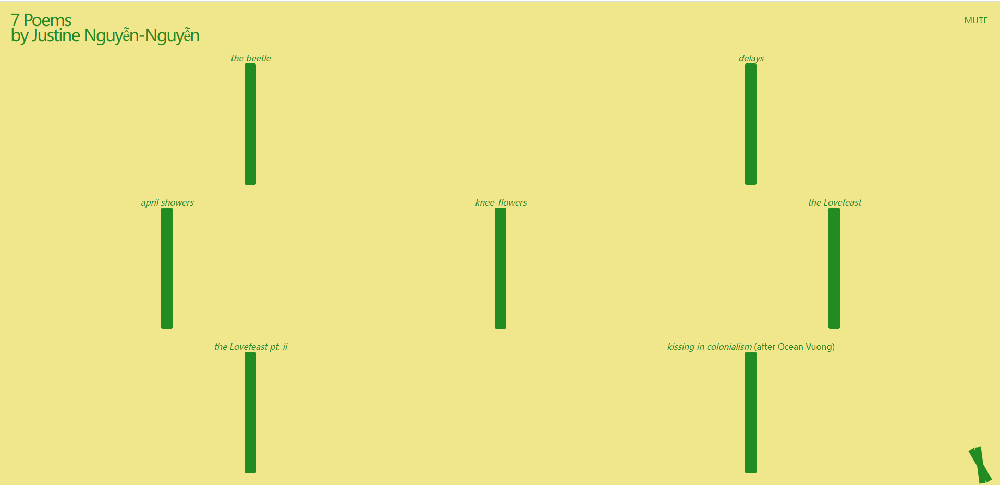

This is Yuxuan's assignment 1
7 Poems
by Justine Nguyễn-Nguyễnthe beetle

1) What was the first thing you paid attention to when interacting with the experience?
I first noticed that the only two colors on this page are yellow for the background, and green for the text, and no image!
2) Spend two minutes with the experience and create a list of each of your discrete actions.
Action 1: Click on the title and author's name (they are combined), and the page is expanded with a number of phrases and bar graphs. Action 2: Click on the first phrase and a poem appears, with word after word and with music.Action 3: I clicked on the mute in the upper right corner, and when I clicked on it the music was gone, but that doesn't mean it stopped, it should just be that the sound on this site was turned off.Action 4: In the lower right corner, there is a symbol like a plus or multiplication sign, put the mouse over it and a bunch of reading machines appear.
3) What part of the experience did you spend the most time engaging with?
I experience the second action the most because it has a total of seven phrases to click on, each followed by different content and music.
4) What was the most common action in your two minute interaction with the experience?
Click on the different phrases or names of the poems because there are so many of them, seven in all!
5) What is your impression of the intended primary goal of the interactive experience?
I think the author just wanted to show the seven poems in an engaging and interesting way.
6) How does the interactive experience communicate this primary goal?
With the novelty of words appearing one after the other, the whole poem appears at the end, and each poem is equipped with a different bgm.
7) What is your impression of how the experience should be interacted with over time? (For how long and how many different times)
When I first clicked into this site I thought I could interact by clicking on the phrases or columns in there, but it all ended up being the same way.
8) How does the interactive experience communicate how it should be interacted with over time?
I think the author also applied only one way of mouse clicking, the web page looks too simple.(but it's not)
9) What other media forms (digital or otherwise) does the experience reference?
Just audio
10) What does this reference/s communicate to you about how you should act when engaging with your research experience?
It's a good idea to be able to add different background music based on different options
11) What does this reference/s communicate to you about how you should feel when engaging with your research experience?
Just relax, even if it seems simple it can be fun!
12) What is the most frustrating part of the interaction to you and what makes that part frustrating?
The music is fun, but there's no way to stop them individually with too many clicks, and muting is the only way to quiet them down.
13) What is the most satisfying part of the interaction to you and what makes that part satisfying?
I like the way his verses are conveyed, keyword by keyword, it keeps me focused.